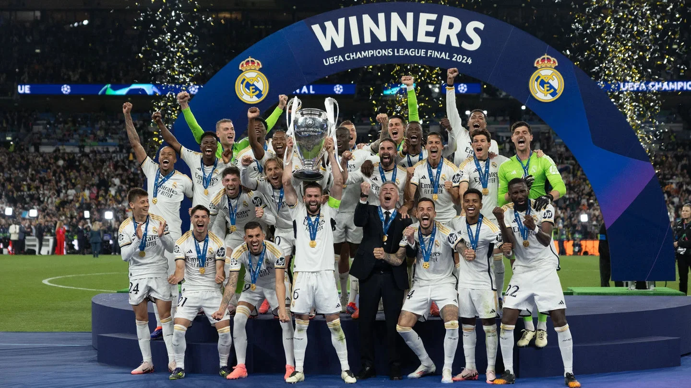
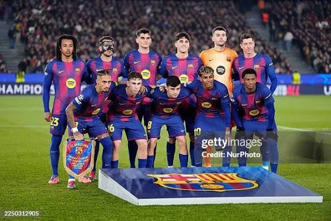
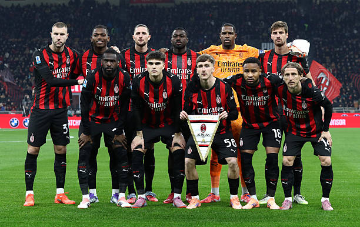
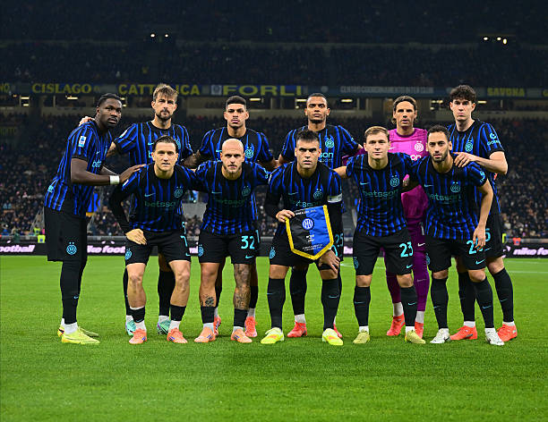

Historia del Fútbol
El fútbol moderno nació en Inglaterra en 1853 con la creación de la Football Association, unificando reglas basadas en juegos de pelota ancestrales como el cuju chino. Su expansión global se consolidó con la fundación de la FIFA en 1904 y el primer Mundial en 1930, convirtiéndose en el deporte rey del planeta.

Galería de equipos




Real Madrid
El Real Madrid es uno de los clubes más importantes y exitosos de la historia del fútbol mundial. A lo largo de los años, ha contado con grandes leyendas que dejaron huella con su talento, sus goles y sus títulos. Es reconocido por su mentalidad ganadora, su historia y su pasión por competir al máximo nivel.
Barcelona
El FC Barcelona es un club histórico que se caracteriza por su estilo de juego, el talento de sus futbolistas y su compromiso con el fútbol ofensivo. A lo largo de su historia, ha tenido grandes jugadores que hicieron disfrutar a millones de aficionados y conquistaron importantes títulos. Su lema "Més que un club" representa su identidad y sus valores.
Milan
El AC Milan es uno de los clubes más históricos de Italia y Europa. Se ha destacado por su grandeza, sus grandes futbolistas y sus importantes conquistas, especialmente en las competiciones europeas. Su camiseta rojinegra representa una tradición de esfuerzo, pasión y orgullo que ha marcado generaciones de aficionados.
Inter
El FC Internazionale Milano, conocido como Inter de Milán, es uno de los clubes más prestigiosos del fútbol italiano. A lo largo de su historia, ha conseguido importantes títulos y ha contado con jugadores de gran calidad. Sus colores azul y negro representan la identidad de un equipo que compite con orgullo y pasión en cada temporada.
Equipos destacados
| Equipo | País | Champions League |
|---|---|---|
| Real Madrid | España | 15 |
| Barcelona | España | 5 |
| Milan | Italia | 7 |
| Inter | Italia | 3 |